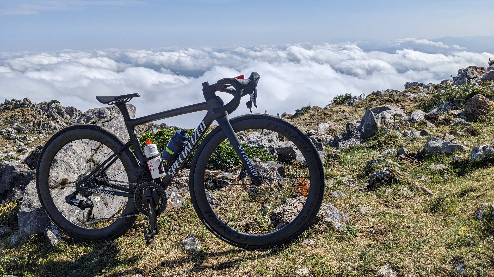
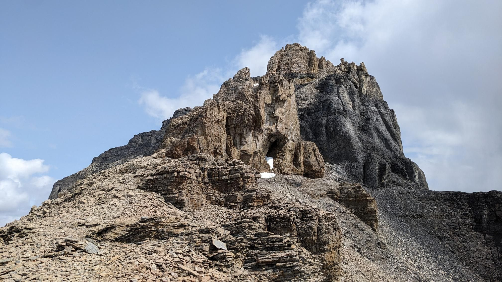
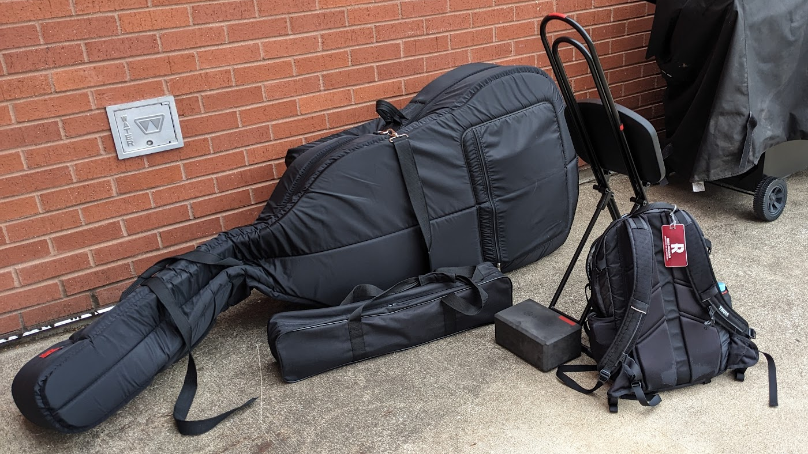
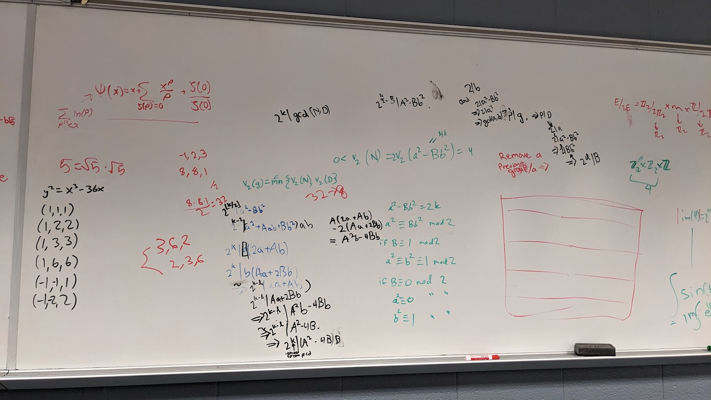
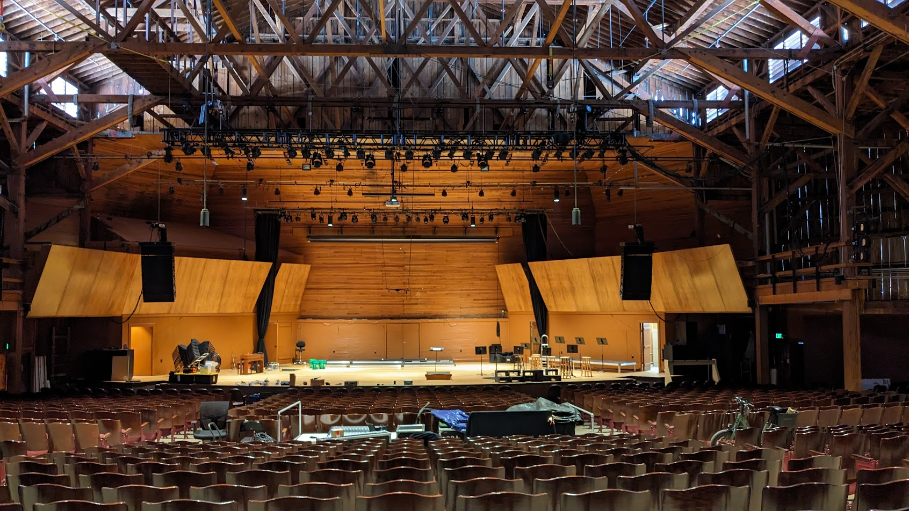

I have road biked for most of my life, and one of my goals for 2026 is to climb 1,000,000 feet (304,800 meters). Recently, I have also taken my road bike on some easier gravel roads around Boulder. Many of my non-commuting rides have lots of elevation gain or are long.
Unusual Facts:I enjoy hiking and backpacking around Colorado, especially the in San Juans. I am a peakbagger and have slowly been completing the fourteeners (36 out of 58 of the named peaks), but I prefer mountains with less people, like the thirteeners.
Unusual Facts:

I currently play bass with Jefferson Symphony Orchestra and Flatirons Community Orchestra, and I have played in orchestras since middle school.
Unusual Facts:I like to learn and do math for fun. I am most interested in pure math and math with applicationsn to computer science. In college, I had opportunities to take and sit in on many math courses, including Galois Theory and Elliptic Curves.
Unusual Facts:

I work as a stage technician for Macky Auditorium and Colorado Music Festival and helped the stage crew at Rose-Hulman. Stage work gives me a break from sitting and writing code by letting me set up for shows.
Unusual Facts: